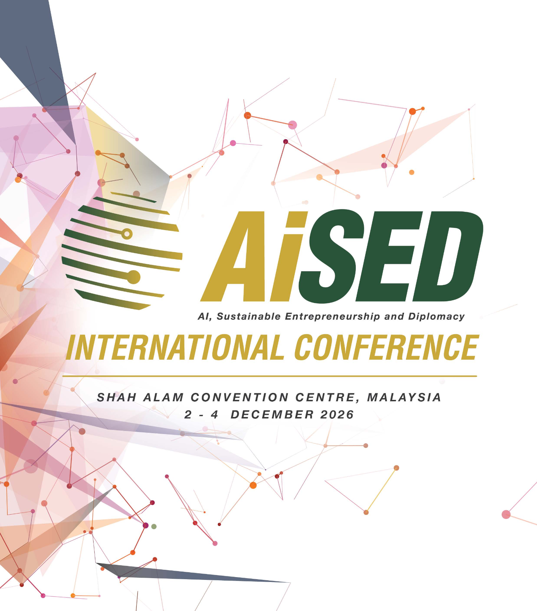
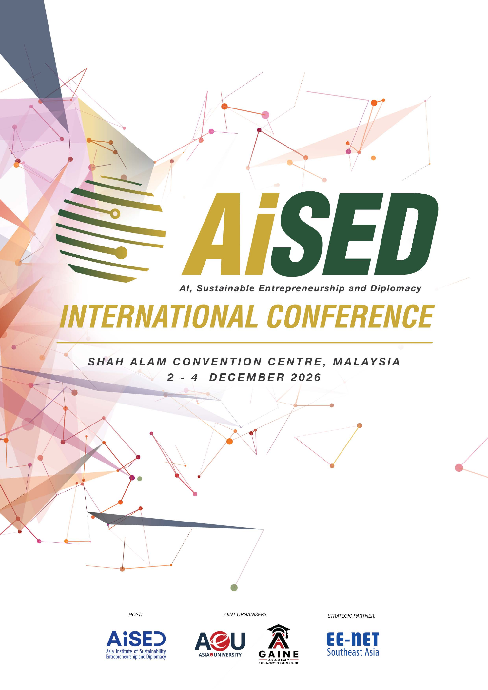
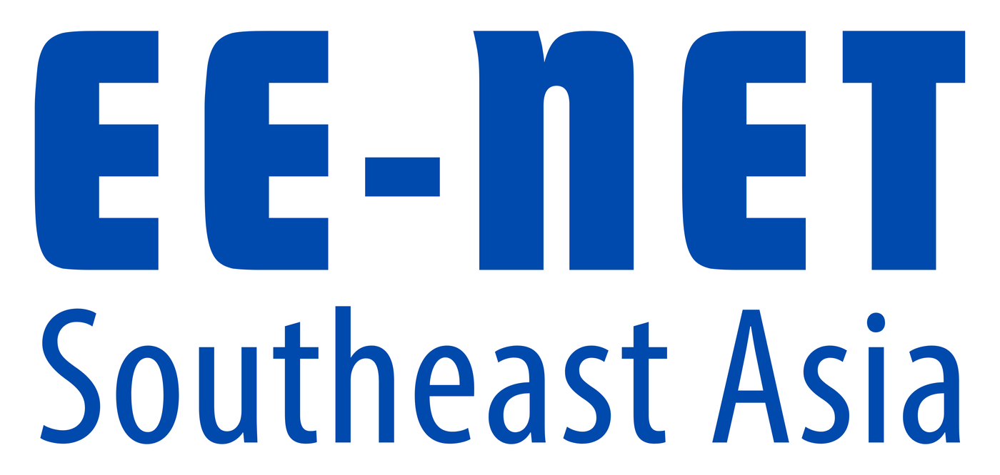

Academics & Researchers
Academics & ResearchersAiSED International Conference 2026
Harnessing AI. Empowering Innovation.
Advancing sustainable futures through entrepreneurship and diplomacy.


Venue
Shah Alam Convention Centre, Malaysia
4, Persiaran Dato Menteri, Seksyen 14, 40000 Shah Alam, Selangor
Location
Registration routes are now open by category.
Speaker and paper submissions are invited.
Partnership opportunities are available.
AiSED International Conference 2026.
Introduction
AiSED International Conference 2026.
Harnessing AI. Empowering Innovation. Advancing Sustainable Futures.
The AiSED International Conference 2026 brings together global thought leaders, policymakers, academics, entrepreneurs, diplomats and industry practitioners to explore how Artificial Intelligence, Sustainable Entrepreneurship and Diplomacy can shape a more resilient, inclusive and future-ready world.
Set against the vibrant backdrop of Shah Alam, the capital city of the state of Selangor and within Kuala Lumpur, this international conference serves as a dynamic platform for knowledge exchange, strategic collaboration and transformative ideas that bridge technology, sustainability and global cooperation.
Hosted by AiSED, with Asia e University and Gaine Academy as Joint Organisers, the conference aims to inspire meaningful dialogue and actionable solutions that advance innovation, strengthen sustainable development and foster international partnerships in the AI era.
The conference is proudly held under the patronage of Duli Yang Teramat Mulia Raja Muda Selangor, Patron of AiSED, whose distinguished support reflects the importance of responsible innovation, educational excellence and sustainable global progress.
Participants can expect insightful keynote addresses, high-impact plenary discussions, technical paper presentations, industry forums, workshops and networking opportunities featuring renowned experts and emerging voices from around the world.

Who should attend
Built for a global community.
Academics & Researchers Policy Makers & Leaders / Diplomats
Policy Makers & Leaders / Diplomats Business Owners & Entrepreneurs
Business Owners & Entrepreneurs Industry Professionals
Industry Professionals Postgraduate Students
Postgraduate StudentsConnect with experts in AI, sustainability and diplomacy.
Share innovative ideas on an international platform.
Create links across academia, industry and government.
Discuss the future of business, education and society.
Selected papers may be considered for SCOPUS / MyCITE-indexed journals.
Join a thriving regional hub for innovation and entrepreneurship.
Conference theme
Harnessing AI, Empowering Innovation, Advancing Sustainable Futures Through Entrepreneurship and Diplomacy.
By DYTM Raja Muda Selangor.
Global thought leaders sharing future-focused insights.
Practical sessions and industry perspectives.
Strategic dialogue across research, policy and enterprise.
Connect with local and international participants.
Recognising papers, presentations, innovation and partnerships.
Portal
Start here.
Use the conference portal to register, review the programme, submit your work, or explore partnership options.
Participate
Registration
Choose Visitor, Speaker or Partner, then open the correct Google Form for your category.
Register now Programme ScheduleReview the three-day conference matrix for keynotes, forums, academic sessions and closing events.
View schedule Academic Paper SubmissionSubmit abstracts, papers and session proposals for AI, sustainability, entrepreneurship and diplomacy tracks.
Submit paperImportant dates
Conference timeline.
Registration deadline for accepted paper presenters.
Participant registration closes for HRD Corp Claimable, General Admission and Government Agencies delegates.
Opening, forums, academic sessions, collaboration meetings and awards.
Featured voices
Programme leaders.
The programme brings together voices in AI, sustainability, entrepreneurship, diplomacy, education and policy to share practical insights and future-focused perspectives.
AI
Global AI Keynote
AI policy, ethics and sustainable transformation.
SD
Sustainability Expert
Green economy, ESG and future-ready institutions.
DP
Diplomacy Forum
International collaboration in the AI era.
ED
Education Panel
AI in higher education and research ecosystems.
Schedule
Three-day programme.
Official opening ceremony, keynote sessions, diplomacy forum and AI in higher education forum.
International entrepreneurial talks and parallel academic sessions across conference tracks.
Future collaboration panel, strategic meetings, MoU ceremony, closing session and awards.
Registration
Ready to participate?
Partners
Create impact together.
AiSED International Conference 2026 brings together academic, industry and ecosystem partners for AI, sustainability, entrepreneurship and diplomacy.
Organisers
Strategic Partners
